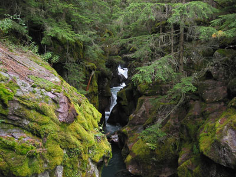
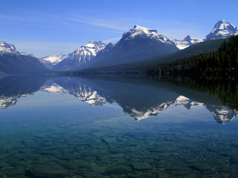
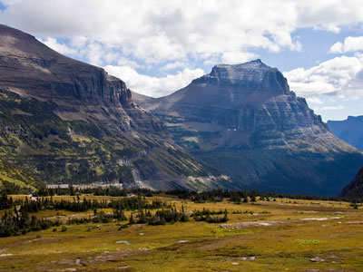
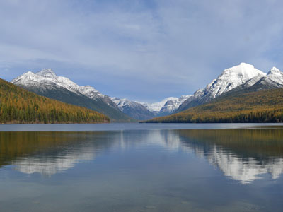
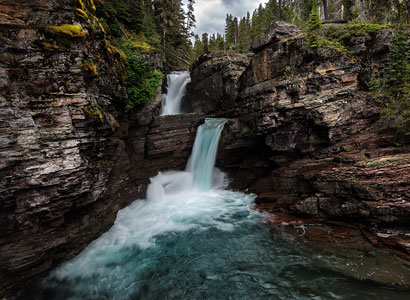
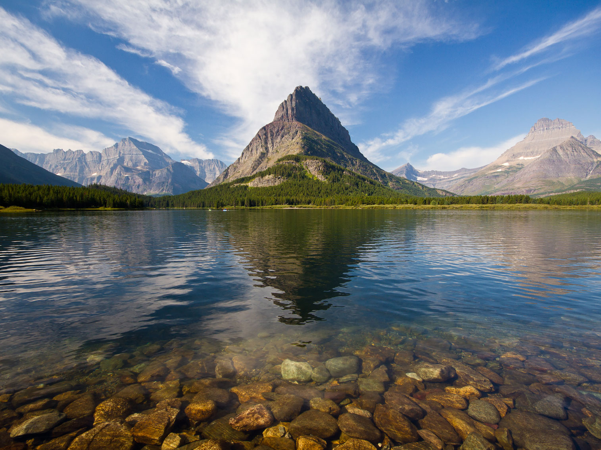
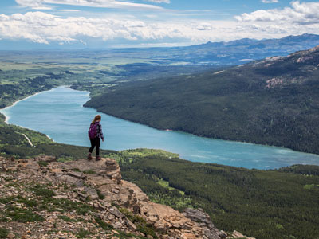

Glacier National Park Travel Guide
National park encompassing over 1 million acres (4,000 km2) and includes parts of two mountain ranges (sub-ranges of the Rocky Mountains), over 130 named lakes, more than 1,000 different species of plants, and hundreds of species of animals
General Information
Accepts America The Beautiful Pass
West Entrance:
- Whitefish, 26 miles
- Kalispell, 33 miles
East Entrance
- Cut Bank, 62 miles
To West Entrance - From Missoula (138 miles): Continue to I-90 W. Take US-93 N to Montana Hwy 35 W/S Shore Rd in Lake County. Continue on Montana Hwy 35 W to Flathead County. Turn right onto U.S. Rte 2. Turn left onto Glacier Rte 1 Rd/Going-to-the-Sun Rd.
Overview
Glacier National Park in northwestern Montana, on the Canada-United States border, protects more than a million acres of jagged peaks, glacier-carved valleys, alpine lakes, and old-growth forest. The park includes parts of two mountain ranges in the northern Rocky Mountains, more than 130 named lakes, over a thousand species of plants, and hundreds of species of animals, and it forms the heart of the "Crown of the Continent" ecosystem. Of the roughly 150 glaciers that existed in the mid-1800s, only about 25 active glaciers remain, and they are shrinking. Its centerpiece is the Going-to-the-Sun Road, an engineering marvel that crosses the Continental Divide at Logan Pass.
Glacier was established as a national park on May 11, 1910. Soon after, the Great Northern Railway built grand hotels and chalets, many modeled on Swiss architecture, to promote the park as "America's Switzerland." Together with Canada's Waterton Lakes National Park, it forms the world's first International Peace Park (1932), and it is a UNESCO World Heritage Site and Biosphere Reserve. People visit to drive the Going-to-the-Sun Road, hike to alpine lakes and overlooks, look for mountain goats and grizzly bears, take boat tours on glacier-fed lakes, and stay in historic lodges.
Park Sections
Glacier has several distinct regions, with the Going-to-the-Sun Road linking the west and east sides. The west side is centered on Apgar and Lake McDonald, the park's largest lake, with the Apgar Visitor Center and the old-growth cedar forest at Trail of the Cedars. The road climbs through The Loop to Logan Pass at the Continental Divide and descends to St. Mary Lake on the east side. Farther north, Many Glacier is a popular hiking hub with the historic Many Glacier Hotel, and Two Medicine in the southeast is a quieter valley. The remote North Fork, near Polebridge, is reached by dirt roads.
Sightseeing and Exploring the Park
The 50-mile Going-to-the-Sun Road is one of the great scenic drives in North America, with viewpoints and pull-offs that include Lake McDonald, Avalanche Creek, The Loop, Logan Pass, Jackson Glacier Overlook, Wild Goose Island Overlook, and Sun Point. The road is narrow and winding, with vehicle size limits on its steepest section (about 21 feet long, 8 feet wide, and 10 feet tall), and a vehicle reservation or shuttle may be needed in peak season, so check the park website. Other roads lead to Many Glacier, Two Medicine, and the North Fork. Most of the park's backcountry is reachable only on foot.
Hiking
Glacier has more than 700 miles of trails for all levels. Easy walks include the accessible Trail of the Cedars (0.7 miles) and the Many Glacier Nature Trail. Moderate hikes include Avalanche Lake (4.5 miles round trip) and the Hidden Lake overlook from Logan Pass (2.7 miles round trip), where mountain goats are often seen. The Highline Trail follows the Continental Divide for about 12 miles and is one of the most famous hikes in the park, ending at The Loop. Strenuous favorites include Grinnell Glacier and Iceberg Lake at Many Glacier. Carry bear spray, make noise on the trail, and be prepared for snow on high trails into July.
Other Activities
Beyond hiking and driving, Glacier is known for scenic boat tours on Lake McDonald, St. Mary Lake, Many Glacier lakes, and Two Medicine Lake, some on historic wooden boats. Historic red "Jammer" buses offer guided tours of the Going-to-the-Sun Road. Other activities include horseback riding, backpacking, fishing, bicycling (the road has seasonal restrictions), whitewater rafting on the Middle Fork of the Flathead River near West Glacier, ranger programs, stargazing in the International Dark Sky Park, and winter snowshoeing and cross-country skiing. Several historic chalets, such as Granite Park Chalet, can be reached only on foot.
Flora and Wildlife
Glacier has almost all of its original native plant and animal species. Grizzly bears and black bears live here, so bear awareness is essential, along with moose, mountain goats, bighorn sheep, elk, wolverines, lynx, and hoary marmots. Mountain goats are commonly seen at Logan Pass, and bears are often seen from the road in Many Glacier. The park's ecosystems range from prairie to alpine tundra, and the western forests of cedar and hemlock are the easternmost of their type. Beargrass and wildflowers bloom in alpine meadows in July and August. Viewing is on your own, and some lodges offer guided wildlife tours.
Access
Glacier is far from major cities. The closest airport is Glacier Park International Airport in Kalispell, about 30 miles from West Glacier (roughly 40 minutes), and Missoula is about 2.5 to 3 hours south. The Amtrak Empire Builder stops at West Glacier and East Glacier Park. The west entrance is at Apgar near West Glacier, and the east entrances are at St. Mary, Many Glacier near Babb, and Two Medicine near East Glacier Park, all reached from US-2 or US-89. From Calgary, Alberta, the drive is about 4.5 hours. Driving between the west and east sides over the Going-to-the-Sun Road takes about two hours without stops.
Seasons
The park is open year-round, but most services operate from about late May to mid-September. The Going-to-the-Sun Road usually opens fully between late June and mid-July, once plows clear Logan Pass, and it closes again with snow in October. July and August are the busiest months and have wildflowers and warm weather, while September brings fewer crowds and golden larches and aspens. Winter is quiet, with deep snow, cross-country skiing and snowshoeing, and most roads closed. Many Glacier and Two Medicine facilities close from September to late May. Check the National Park Service website for road status.
Camping and Lodging
The park has about 13 campgrounds, including Apgar, Fish Creek, Avalanche, Sprague Creek, Rising Sun, St. Mary, Many Glacier, and Two Medicine, and many take reservations on Recreation.gov. Lodging includes Lake McDonald Lodge, Apgar Village Lodge, Rising Sun Motor Inn, the Many Glacier Hotel, and Swiftcurrent Motor Inn, as well as the hike-in Granite Park Chalet. Outside the park, West Glacier, Columbia Falls, and Whitefish on the west, and East Glacier Park Village, St. Mary, and Babb on the east, have hotels, cabins, and motels. Whitefish, about 30 minutes from West Glacier, has the widest choice, including resorts and the Lodge at Whitefish Lake.
Visitor Centers
The Apgar Visitor Center on the west side is open year-round on a limited schedule and is the main source of information. The Logan Pass Visitor Center at the Continental Divide is open in summer and is a hub for hikers. The St. Mary Visitor Center on the east side has exhibits and a bookstore. Ranger stations at Many Glacier, Two Medicine, and Polebridge provide trail information and permits. Hours vary by season, so check the National Park Service website.
Shuttle System
The Glacier National Park Shuttle System provides transportation along the Going-to-the-Sun Road corridor, allowing visitors to experience some of the park's most scenic destinations without driving. The shuttle service helps reduce traffic congestion, ease parking challenges, improve access to popular trailheads, and support resource protection efforts throughout the park.
The shuttle system operates seasonally and serves numerous stops between the east and west sides of Glacier National Park. Visitors may board and exit at designated shuttle stops throughout the day, making it easy to customize trips and explore different areas of the park.
How the Shuttle System Works
- Free Service: The shuttle is available at no additional charge.
- Hop-On, Hop-Off Transportation: Visitors may board and exit at designated stops throughout the route.
- Seasonal Operation: Service generally operates during the summer visitor season.
- First-Come, First-Served: Seating is available based on passenger demand and available space.
- Scenic Transportation: Allows visitors to enjoy views without focusing on driving or parking.
Going-to-the-Sun Road Access
The shuttle follows portions of the iconic Going-to-the-Sun Road, one of the most scenic drives in North America. The route provides access to many of Glacier National Park's most popular viewpoints, hiking trails, visitor facilities, and recreational destinations.
- East and West Side Connections: Provides transportation between key destinations along the corridor.
- Scenic Travel: Offers panoramic views of mountains, valleys, waterfalls, and alpine landscapes.
- Trailhead Access: Connects visitors with numerous hiking opportunities.
- Visitor Convenience: Reduces the need to search for limited parking at popular destinations.
Popular Shuttle Stops
- Apgar Visitor Center: Information services, exhibits, and visitor orientation.
- Lake McDonald Lodge: Historic lodging, dining, and lake access.
- Avalanche Creek: Access to Avalanche Lake Trail and Trail of the Cedars.
- The Loop: Popular trail access point along Going-to-the-Sun Road.
- Logan Pass: Access to the Logan Pass Visitor Center and alpine trails.
- St. Mary Visitor Center: Visitor services and eastern park access.
Logan Pass Access
Logan Pass is one of the busiest destinations in Glacier National Park and a major hub for shuttle riders. Using the shuttle can help visitors avoid limited parking availability at the pass during peak summer periods.
- Hidden Lake Trail Access: Provides convenient transportation to one of the park's most popular hikes.
- Highline Trail Access: Serves hikers beginning long-distance and scenic trail adventures.
- Visitor Center Access: Connects visitors to exhibits, information services, and educational displays.
- Parking Alternative: Reduces the need to compete for limited parking spaces.
Benefits of Riding the Shuttle
- Reduces Vehicle Traffic: Helps decrease congestion along Going-to-the-Sun Road.
- Improves Parking Availability: Supports more efficient use of parking areas throughout the park.
- Enhances Visitor Experience: Allows passengers to focus on scenery and recreation rather than driving.
- Supports Resource Protection: Reduces the environmental impact of vehicle traffic.
- Provides Trail Flexibility: Makes one-way hiking routes and point-to-point adventures easier to plan.
Accessibility
The shuttle system is designed to improve access to many of Glacier National Park's major destinations and visitor facilities. Accessible transportation options are available to support a wide range of visitors.
- Accessible Vehicles: Shuttle vehicles accommodate many accessibility needs.
- Visitor Facility Access: Connects major visitor centers and developed areas.
- Convenient Transportation: Provides access to numerous scenic viewpoints and recreational opportunities.
Important Visitor Information
- Check Current Schedules: Operating dates and shuttle frequencies may vary each season.
- Arrive Early: Popular stops can experience heavy demand during summer months.
- Weather Dependent: Operations may be affected by road conditions, construction, or weather events.
- Plan Ahead: Visitors should review current transportation information before arriving at the park.
This article uses material from National Park Service resources describing Glacier National Park's shuttle transportation services, Going-to-the-Sun Road visitor access, shuttle operations, and visitor transportation planning information. Sources: Glacier National Park transportation and shuttle system information published by the National Park Service.
This article uses material from the Wikipedia article "Glacier National Park (U.S.)", which is released under the Creative Commons Attribution-Share-Alike License 3.0. Additional information comes from the National Park Service Glacier National Park website.
Featured Regions

https://www.flickr.com/people/43288043@N04 Glacier National Park, Public domain, via Wikimedia Commons; Image Size Adjusted

Avalanche Gorge
A narrow, moss-lined canyon carved by glacial runoff where turquoise water rushes through rocky walls beneath towering cedar trees.

Jeff P from Berkeley, CA, USA, CC BY 2.0, via Wikimedia Commons; Image Size Adjusted
.jpg){kind=link}
Going-to-the-Sun Road
Scenic mountain road is the only road that traverses the park, crossing the Continental Divide through Logan Pass at an elevation of 6,646 feet

Jeff P from Berkeley, CA, USA, CC BY 2.0, via Wikimedia Commons; Image Size Adjusted
Jeff P from Berkeley, CA, USA, CC BY 2.0, via Wikimedia Commons; Image Size Adjusted
Lake McDonald
Largest lake in Glacier National Park, filling a valley formed by a combination of erosion and glacial activity

Jeff P from Berkeley, CA, USA, CC BY 2.0, via Wikimedia Commons; Image Size Adjusted
Logan Pass
Located along the Continental Divid, it is the highest point on the Going-to-the-Sun Road

Jeff P from Berkeley, CA, USA, CC BY 2.0, via Wikimedia Commons; Image Size Adjusted
Many Glacier
Region noted for numerous lakes, waterfalls and dense coniferous forests interspersed with alpine meadows
https://www.flickr.com/people/43288043@N04 Glacier National Park, Public domain, via Wikimedia Commons; Image Size Adjusted
Many Glacier Nature Trail
Scenic alpine trail featuring glacial lakes, mountain valleys, waterfalls, wildflower meadows, and abundant wildlife viewing opportunities.

Jeff P from Berkeley, CA, USA, CC BY 2.0, via Wikimedia Commons; Image Size Adjusted
North Fork
Remote wilderness area featuring rugged gravel roads, pristine alpine lakes, dense forests shaped by wildfire, and abundant wildlife in a secluded backcountry setting.
https://www.flickr.com/people/43288043@N04 Glacier National Park, Public domain, via Wikimedia Commons; Image Size Adjusted
Polebridge
Off-grid frontier community featuring rustic cabins, a historic mercantile bakery, and a quiet gateway to remote wilderness landscapes along a scenic river valley.
https://www.flickr.com/people/43288043@N04 Glacier National Park, Public domain, via Wikimedia Commons; Image Size Adjusted
Sacred Dancing Cascade
Small picturesque cascade flowing over smooth rock formations along a forested creek, offering a serene and easily accessible natural feature near the roadway.

Jeff P from Berkeley, CA, USA, CC BY 2.0, via Wikimedia Commons; Image Size Adjusted
St. Mary Lake
Second-largest lake located on the east side of the park, with Going-to-the-Sun Road parallelling the lake along its north shore
https://www.flickr.com/people/43288043@N04 Glacier National Park, Public domain, via Wikimedia Commons; Image Size Adjusted
The Loop
Historic mountain pass overlook featuring panoramic alpine scenery, winding roadway vistas, dramatic glacial valleys, and access to high elevation hiking routes.

Jeff P from Berkeley, CA, USA, CC BY 2.0, via Wikimedia Commons; Image Size Adjusted
Trail of the Cedars
Accessible boardwalk loop winding through old-growth cedar and hemlock forest beside a rushing mountain creek and a narrow gorge carved by powerful water.

Jeff P from Berkeley, CA, USA, CC BY 2.0, via Wikimedia Commons; Image Size Adjusted
Two Medicine
Region located in the southeastern section of Glacier National Park is a starting point for many trails and tourboats take visitors out on Two Medicine Lake
https://www.flickr.com/people/43288043@N04 Glacier National Park, Public domain, via Wikimedia Commons; Image Size Adjusted
Two Medicine Lake
Expansive alpine lake surrounded by rugged peaks offering scenic views, hiking access, and a tranquil setting for outdoor recreation.
https://www.flickr.com/people/43288043@N04 Glacier National Park, Public domain, via Wikimedia Commons; Image Size Adjusted
Upper Two Medicine
Remote alpine valley featuring pristine lakes, towering peaks, historic chalets, abundant wildlife, and access to some of Glacier National Park's most scenic backcountry trails.
https://www.flickr.com/people/43288043@N04 Glacier National Park, Public domain, via Wikimedia Commons; Image Size Adjusted
Wild Goose Island Overlook
Scenic roadside overlook featuring panoramic lake views, forested mountain slopes, rugged alpine peaks, and one of the most photographed landscapes along Going-to-the-Sun Road.